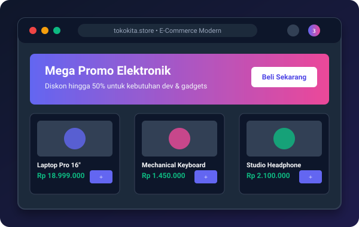

Web Store

TokoKita - Platform E-Commerce Modern
Platform belanja daring interaktif yang dilengkapi katalog produk responsif, fitur filter kategori, keranjang belanja (shopping cart), dan simulasi checkout pembayaran.
Bootstrap 5
HTML5 Semantik
Vanilla JS
Mobile Responsive